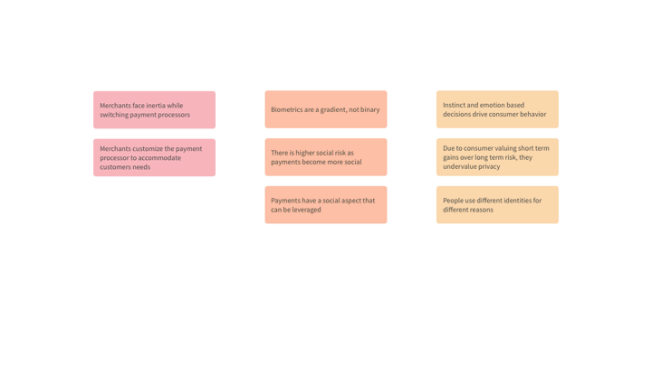
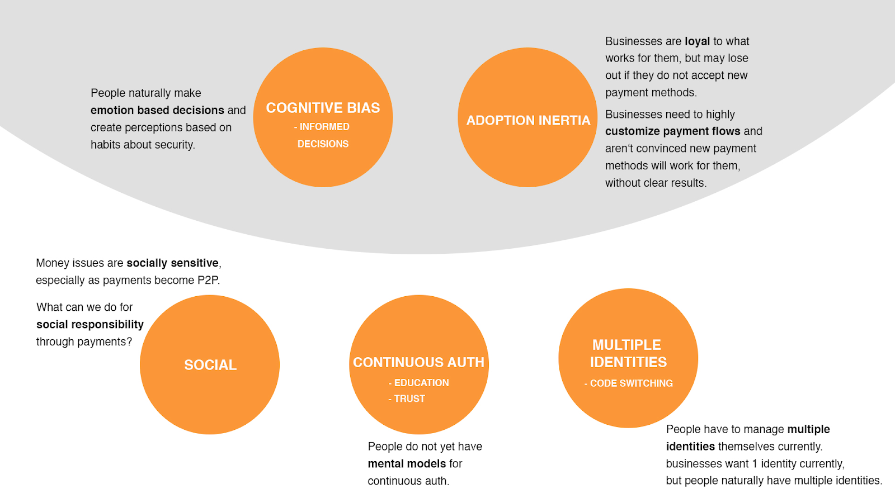
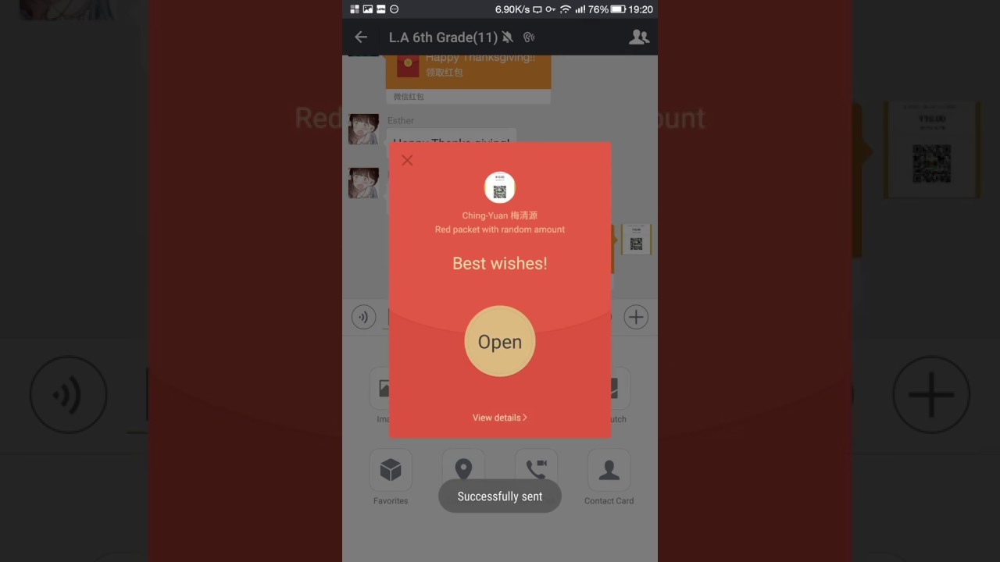
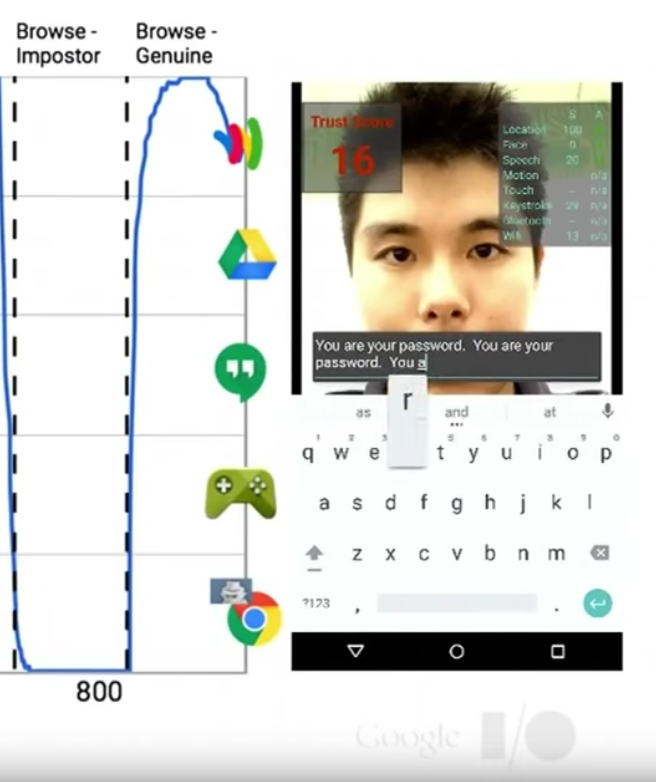
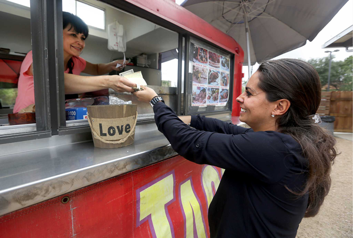

This post outlines the full discovery phase and follows closely our presentation with the client on March 23rd.
Initial prompt: Within the space of authentication and digital payments, design a solution that delivers business value to Mastercard.
After the kickoff meeting with our clients, things became a lot more clear. We redefined our prompt to:
Create a better authentication experience for people in digital economies.
Some general guidelines to keep in mind:- Focus on larger audiences
- Look for real solutions for most users
- Find actual user needs as well as our interests
- Be reasonable on time and resources - go small but do it well
- Understand the consumer, and perceptions around security and authentication
- Encourage new technology adoption
- Ideation with the goal of a possible realized product for MasterCard
- Plan a Go-To-Market strategy (likely over the summer)
- Design solutions for problems we’re passionate about
- Biometrics
- Identity and Privacy
- Payment Efficiency/Convenience
- Fraud
We conducted extensive research on each of these topics for about a week each. Research was more clearly described in our previous blog posts and included guerrilla research, interviews with experts and general users, as well as a lot of secondary research.

At the end of 4 weeks we consolidated all our findings into an Affinity Diagram, which we further synthesized into 14 topics of interest. To consolidate these insights one level further we grouped them into three buckets. Insights that were consumer based, merchant based and consumer-merchant relationship based. As a team, we prioritised each note within each of these 3 buckets. Higher priority was given to notes with more scope for research.

We performed a design activity in which, all team members jotted down 3 of their their favorite insights, which was further refined and categorized into 5 buckets. The insights these buckets came from are captured in the image below.
Areas of Exploration
 The general Areas of Exploration were:- Social
- Continuous Authentication
- Multiple Identities
- Cognitive Biases
- Adoption Inertia
The three circles at the bottom can be looked at as spaces in which we could potentially build products. The two buckets at the top are umbrella items that would potentially support any products we might build or conceptualize.
Social Overview- Money issues are socially sensitive, especially as more payments become more P2P
- Higher social risk, but higher social reward.
- Awkwardness abounds when asking for money.
Payments are becoming increasingly social
This photo for example, is a feature in WeChat that allows users to send money and good wishes to each other during Chinese New Year. Users can even send Red Packets to groups and each group member then receives a random amount of money, and it’s fun to find out who wins the highest amount.
Just to get a sense of how big social payments are becoming: In 2015 more than a billion Red Packets were sent. This grew to more than 2 billion in 2016.
Facebook, ApplePay, WeChat are all providing their own platforms to encourage microtransactions. With increased adoption of these platforms there is increased rewards but also increased risks. Users tend to share their purchase information in their social circle. Venmo is leveraging this social behavior by letting us see everybody’s transactions globally. But there are major privacy concerns here.
From our research we learned that money issues are socially sensitive. We learned that no matter what, users always feel some degree of embarrassment and awkwardness asking for money and even while asking someone to return their money. Also, people don’t want to share every transaction they make, only the ones they want.
Venmo is a company currently working on alleviating this social pressure in innovative ways:Venmo has a nudge feature that allows users to remind their friends to pay them without actually having to ask them. Venmo allows users to wrap awkward payments with light-hearted emojis.
As a team, we wanted to explore how might we design payments around these social opportunities. Leveraging these opportunities could bring value to customers. We also hope to explore highly interactive, social features like the Red Packet example, that not only is fun but also creates in users a social obligation to return the favor. When a loved one randomly sends you a small gift, you mostly want to send one back!
We also would like to explore the possibility of doing social good through payments. For example, Ant Financial is gamifying purchasing. If users walk, or use public transport or adopt other environmental friendly habits, they can use the app to record these actions and collect ‘energy’ points. The points can be used to grow a virtual tree in their app and can eventually be converted into a real tree when say 20 units of energy is saved.
Ant Financial said that as of January 2017, more than a million real trees were planted reducing almost 2,000 tons of carbon each day.
Continuous Authentication
Authentication is becoming a gradient, rather than binary. This image is from Google’s project Abacus. The system is able to determine who the user is in terms of a percentage based on his typing patterns, facial recognition and several other factors - and this happens in real time.
Authentication is leaning towards becoming a gradient than being binary. Based on probability, users are given a trust score as opposed to classifying them as absolutely authenticated or absolutely not authenticated.
Because of how new continuous authentication is, people do not know how it works. They still haven’t created mental models for them. The problem is that people do not know how to perceive it and different people look at it differently. We learned that some find it cool, many find it very creepy.
The final issue is that when you use continuous authentication, your activities are mapped to your biometrics in real time. You cannot change or reset your biometric information, these are constant. Which means that users’ activities are going to always be mapped back to them no matter what. Another way of looking at this problem, is - what happens if someone gets access to a users’ biometric information? There could be dangerous consequences.
Some of the areas we’re super excited to explore as a team are, potentially finding a design solution to align people’s mental models in a positive way by designing a preferred future state for continuous auth.
How Might We:
How might we educate and create awareness about continuous authentication2FA is a pain. How might we increase the usability of 2FA by leveraging the ease of continuous authentication Amazon Go and Uber are implementing authentication solutions that are spatially activated or location-based. How might we explore this area further.
Multiple Identities
People “wear different hats” or use multiple identities to present themselves. Different events involve different segments of your network and involve different protocols and behaviors. The same is true online. This is called Code Switching and continues onto online.
However, businesses, and the tech behind authentication want people to be one person with one identity. For example, the Google ecosystem, all ties back to one email, because this is critical for ad tracking and targeting. Facebook also pushes users to only enter their real names and that you are identified similarly across their products. People that want multiple identities, or want a personal and a business account, have workarounds for skirting the intentions of the system to protect their privacy.
How Might We:
How might we design for multiple “social identities” for one cardholder?
Emotion, Instinct and Perception
- People value speed, cost, convenience over security and privacy.
- People naturally make emotion-based decisions, and develop perceptions based on habits about security.
We know everyone has cognitive biases on both the merchant and customer side. We’ve seen a wide array in our research, but one constant was ‘value tradeoffs’. Some people make these tradeoffs knowingly (“I have nothing to hide” mantra) and some people act out of ignorance and possibly more dangerous. Sometimes they don’t even know what they’re giving up.
How might we educate people to make informed decisions around security (correct false folk models)? Can we design for incorrect mental models? Can we defend people from themselves?
Adoption Inertia
From our interviews with small merchants (micromerchants) we found that there is great inertia for businesses to accommodate new payment methods even when they are aware of the potential benefit. One reason is that businesses are loyal to what’s already working for them. However not embracing new technologies often lead to lost customers and missed opportunity. For business owners who are not very comfortable with technology it is hard for them to evaluate the cost and benefit of new payment technologies and decide whether it works for them. So for example, even though many merchants we interviewed spoke about the benefits of using Square, especially to help track inventory, other merchants don’t want to change their ways or switch to a new payment processor, with some going so far as to still do all their accounting by hand.
We also found that there is great variance in the context in which payments happen. And some contexts are not fully supported by current payment processors. As a result, businesses customize their payment flows and create workarounds. One example was the Chinese food delivery service near CMU. They charge customers with the store owner’s personal Venmo account.
We observed that there are cases when the customer might not have enough funds to pay a merchant, due to a card decline, or because they do not have enough cash. To maintain customer relationships, merchants sometimes allow their customers to come pay the next day.
How Might We:
- HMW convince a small business that a new payment method could work for them?
- HMW design a payment flows that accommodate multiple, different customer needs?
After this presentation we will jump into conceptual design and making things. Next week we’ll start to organize our first design sprint and develop a design prototype to test.